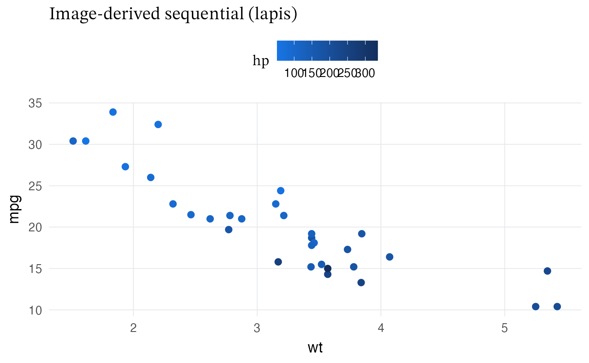
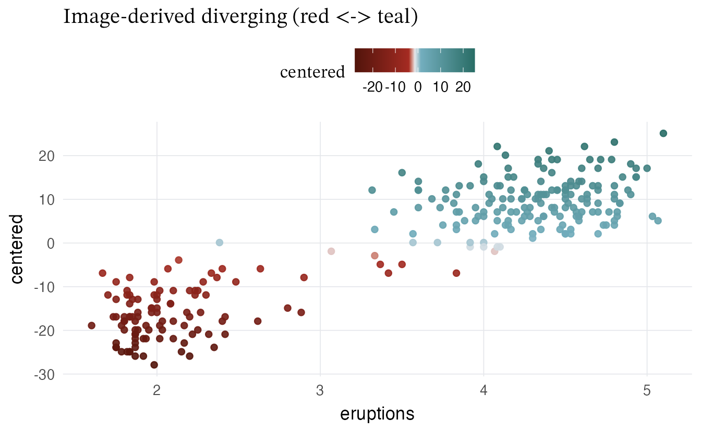
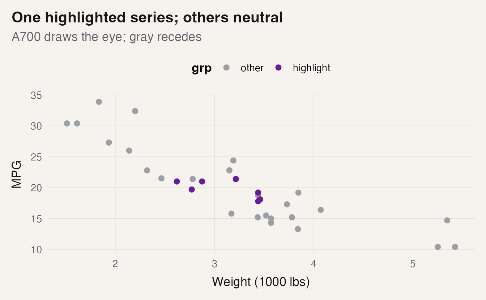

Design notes: Homage system
design-notes.RmdOverview
- One family per page (A900/A700/A500/A300 → roles)
- Links + focus use AA tones; anchors show ▣ on hover
- Callouts and tables use quiet A300 tints; code blocks are flat with a small corner square
Palette families and roles
Families available: red, lapis, ochre, teal, green, violet. Each has four tones:
- A900: links and focus in light mode; strongest contrast
- A700: highlights (one series per plot); nav active marker
- A500: borders, anchors (▣), code-corner square, hr notch
- A300: tints for callouts and table stripe; links/focus in dark mode
Image-derived palettes
The original Homage families favor a single hue family per plot or page. When you want a different aesthetic (pulled from the grid image), use the image-derived palettes and scales. They mirror the API and are fully opt-in.
Sequential (image-based)
mtcars |>
ggplot(aes(wt, mpg, colour = hp)) +
geom_point(size = 2.2) +
labs(title = "Image-derived sequential (lapis)") +
albersdown::scale_color_albers_img("lapis", discrete = FALSE)
Diverging (image-based)
df <- transform(datasets::faithful, centered = waiting - mean(waiting))
ggplot(df, aes(eruptions, centered, colour = centered)) +
geom_point(alpha = 0.9) +
labs(title = "Image-derived diverging (red <-> teal)") +
albersdown::scale_color_albers_img_red_teal(neutral = "#e5e7eb")
Notes - The *_img scales are opt-in and don’t change
existing defaults. - neutral can be set to
"#e5e7eb" (site border token) for visual coherence with
pages. - Prefer the original single-family scales for a quieter, unified
look; reach for the image-derived or diverging scales to emphasize
contrasts.
Links, anchors, and rhythm
Links and focus rings always meet AA. Move the cursor over H2/H3 to reveal the square anchor glyph ▣.
Callouts and code blocks
TIP: Callouts use an A500 border and a subtle A300 tint (≈8–10%). Keep them short and purposeful.
# a small, readable function
foo <- function(x) if (length(x) == 0) NA_real_ else mean(x)
foo(c(1, 2, 3))The code fence has no drop shadow and includes a small A500 square in the top-left corner—a minimal homage.
Tables
Base HTML tables pick up a quiet A300 zebra stripe and thin borders.
| mpg | cyl | disp | hp | drat | |
|---|---|---|---|---|---|
| Mazda RX4 | 21.0 | 6 | 160 | 110 | 3.90 |
| Mazda RX4 Wag | 21.0 | 6 | 160 | 110 | 3.90 |
| Datsun 710 | 22.8 | 4 | 108 | 93 | 3.85 |
| Hornet 4 Drive | 21.4 | 6 | 258 | 110 | 3.08 |
| Hornet Sportabout | 18.7 | 8 | 360 | 175 | 3.15 |
| Valiant | 18.1 | 6 | 225 | 105 | 2.76 |
Plots: one highlight, others neutral
mtcars$grp <- ifelse(mtcars$cyl == 6, "highlight", "other")
mtcars$grp <- factor(mtcars$grp, levels = c("other", "highlight"))
ggplot(mtcars, aes(wt, mpg, color = grp)) +
geom_point(size = 2.2) +
albersdown::scale_color_albers_highlight(
family = params$family,
tone = "A700",
highlight = "highlight",
other_name = "other"
) +
labs(title = "One highlighted series; others neutral",
subtitle = "A700 draws the eye; gray recedes",
x = "Weight (1000 lbs)", y = "MPG")